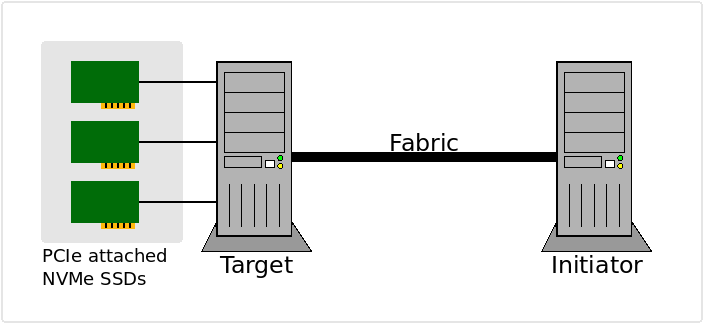

NVMe-over-Fabrics#
NVMe supports multiple memory and message-based transports. PCIe for locally attached devices, TCP and RDMA (iWRAP, InifiniBand, RoCE) for access over a networked fabric. The use of NVMe over a networked fabrics is defined by the NVMe specifications and often referred to a NVMe-over-Fabrics or just fabrics.
In a fabrics setup, one machine typically has a bunch of NVMe devices attached via PCIe, these are then exported aka made accessible over a networked fabric, we refer to the system/machine with this role as the fabrics target. The systems/machines consuming the exported devices over the networked fabric are referred to as the fabric initiator. The figure below is an attempt to visualize these roles.

Roles in a NVMe-oF/NVMe-over-Fabrics/Fabrics setup#
This will guide you through the setup of:
A machine to act as the Fabrics target
Example showing how to export using the Linux kernel
Example showing how to export using SPDK
A machine to act as a Fabrics initiator
Example showing how to Utilize the exported endpoints using xNVMe
The following section will describe the setup and define the environment.
Fabrics Setup#
In the setup TCP will be used as the transport. It is quite convenient as
allows you to work with fabrics using non-RDMA network devices, that is, this
setup is possible using commodity hardware.
Additonally a locally attached NVMe PCIe SSD is exported on the target. It
is available on the system in /dev/nvme0n1 and it has PCIe identifier
0000:03:00.0.
It is assumed that both the initiator, as well as the target, are
running Debian Linux / Bullseye and that xNVMe is installed according to
the Getting Started section. Additonally, the xNVMe source repos
is available at ${XNVME_REPOS}.
When running the commands/scripts in the following sections, then it is assumed
that you are running root. Needless to say, then this is a guide is not
focused on security/access-control.
Start by defining your fabrics setup using the following environment variables:
export NVMET_SUBSYS_NQN="nqn.2022-05.io.xnvme:ctrlnode1"
export NVMET_SUBSYS_NSID="1"
export NVMET_TRADDR="1.2.3.4"
export NVMET_TRTYPE="tcp"
export NVMET_TRSVCID="4420"
export NVMET_ADRFAM="ipv4"
export EXPORT_DEV_PATH="/dev/nvme0n1"
export EXPORT_DEV_PCIE="0000:03:00.0"
# Absolute path to the xNVMe repository
export XNVME_REPOS="/root/git/xnvme"
Adjust the definitions above to match your setup, the various entities will be
used in both the target and the initiator. Run the above commands or
edit and run: ${XNVME_REPOS}/docs/tutorial/fabrics/fabrics_env.sh.
Target Setup#
Here two approaches to setting up a target is provided. The first approach
shows how to setup the fabrics target using Linux Kernel via sysfs. The
second approac shows how to it using SPDK. In both cases we need to load
the following Kernel modules:
modprobe nvme
modprobe nvmet
modprobe nvmet_tcp
Exporting Targets using the Kernel#
With the variables defined, then the following will export the NVMe device at
/dev/nvme0n1 over fabrics using TCP transport:
echo "# Ensure that the NVMe devices are associated with the Linux Kernel NVMe driver"
xnvme-driver reset
echo "# Mounting configfs"
/bin/mount -t configfs none /sys/kernel/config/
echo "# Create an NVMe Target Subsystem"
mkdir -p "/sys/kernel/config/nvmet/subsystems/${NVMET_SUBSYS_NQN}"
echo "# Set subsystem access to 'attr_allow_any_host'"
echo 1 > "/sys/kernel/config/nvmet/subsystems/${NVMET_SUBSYS_NQN}/attr_allow_any_host"
echo "# Create a NVMe Namespace within the Target Subsystem"
mkdir -p "/sys/kernel/config/nvmet/subsystems/${NVMET_SUBSYS_NQN}/namespaces/1"
echo "# Export (${EXPORT_DEV_PATH}) -- add device to kernel subsystem"
echo -n "${EXPORT_DEV_PATH}" > "/sys/kernel/config/nvmet/subsystems/${NVMET_SUBSYS_NQN}/namespaces/1/device_path"
# Enable the NVMe Target Namespace
echo 1 > "/sys/kernel/config/nvmet/subsystems/${NVMET_SUBSYS_NQN}/namespaces/1/enable"
echo "## Setup NVMe-oF connection-listener"
echo "# Create a 'port'"
mkdir /sys/kernel/config/nvmet/ports/1
echo "# Set the transport addr (traddr)"
echo "${NVMET_TRADDR}" > "/sys/kernel/config/nvmet/ports/1/addr_traddr"
echo "# Set the transport type"
echo "${NVMET_TRTYPE}" > "/sys/kernel/config/nvmet/ports/1/addr_trtype"
echo "# Set the transport service-id"
echo "${NVMET_TRSVCID}" > "/sys/kernel/config/nvmet/ports/1/addr_trsvcid"
echo "# Set the address-family"
echo "${NVMET_ADRFAM}" > "/sys/kernel/config/nvmet/ports/1/addr_adrfam"
echo "# Link with the subsystem with the port, thereby enabling it"
ln -s "/sys/kernel/config/nvmet/subsystems/${NVMET_SUBSYS_NQN}" \
"/sys/kernel/config/nvmet/ports/1/subsystems/${NVMET_SUBSYS_NQN}"
Or, by running the script:
${XNVME_REPOS}/docs/tutorial/fabrics/fabrics_target_linux.sh
Exporting Targets using SPDK#
Assuming that you have build and installed xNVMe as described in the Getting Started section, then you have the xNVMe repository available. We will be using the SPDK subproject from it, as it is already build and available for use.
Then run the following:
echo "### NVMe-oF Fabrics target setup using SPDK"
xnvme-driver
echo "## Build the SPDK NVMe-oF target-app (nvmf_tgt)"
pushd "${XNVME_REPOS}/subprojects/spdk/app/nvmf_tgt"
make
popd
echo "# Start 'nvmf_tgt' and give it two seconds to settle"
pkill -f nvmf_tgt || echo "Failed killing 'nvmf_tgt'; OK, continuing."
pushd "${XNVME_REPOS}/subprojects/spdk/build/bin"
./nvmf_tgt &
popd
sleep 2
if ! pidof nvmf_tgt; then
echo "## Failed starting 'nvmf_tgt'"
exit
fi
echo "## Attach local PCIe controllers (${NVMET_TRTYPE})"
"${XNVME_REPOS}/subprojects/spdk/scripts/rpc.py" bdev_nvme_attach_controller \
-b Nvme0 \
-t PCIe \
-a "${EXPORT_DEV_PCIE}"
# The above command will output e.g. 'Nvme0n1'
echo "## Create NVMe-oF transport (${NVMET_TRTYPE})"
"${XNVME_REPOS}/subprojects/spdk/scripts/rpc.py" nvmf_create_transport \
-t "${NVMET_TRTYPE}" \
-u 16384 \
-m 8 \
-c 8192
echo "## Create a NVMe-oF subsystem/controller"
"${XNVME_REPOS}/subprojects/spdk/scripts/rpc.py" nvmf_create_subsystem \
"${NVMET_SUBSYS_NQN}" \
-a \
-s SPDK00000000000001 \
-d Controller1
echo "# Export (${EXPORT_DEV_PCIE}) -- add device to SPDK subsystem/controller"
"${XNVME_REPOS}/subprojects/spdk/scripts/rpc.py" nvmf_subsystem_add_ns \
"${NVMET_SUBSYS_NQN}" \
Nvme0n1
echo "## Setup NVMe-oF connection-listener"
"${XNVME_REPOS}/subprojects/spdk/scripts/rpc.py" nvmf_subsystem_add_listener \
"${NVMET_SUBSYS_NQN}" \
-t "${NVMET_TRTYPE}" \
-a "${NVMET_TRADDR}" \
-s "${NVMET_PORT}" \
-f "${NVMET_ADRFAM}"
Or, by running the script:
${XNVME_REPOS}/docs/tutorial/fabrics/fabrics_target_spdk.sh
Note
For additional documentation on the setup of fabrics using SPDK, then
consult the SPDK documentation on SPDK-NVMe-oF, it has
more details and pointers on SPDK specifics and a nice description of the
NQN definition.
Initiator Setup#
For the initiator setup, load the required Kernel modules by invoking the following:
modprobe nvme
modprobe nvme_fabrics
modprobe nvme_tcp
Or, by running the script:
${XNVME_REPOS}/docs/tutorial/fabrics/fabrics_initiator_modules.sh.
Use via xNVMe#
Connect to the exported fabrics endpoint using xNVMe:
echo "# Enumerate the device"
xnvme enum --uri "${NVMET_TRADDR}:${NVMET_TRSVCID}"
echo "# Inspect the device"
xnvme info "${NVMET_TRADDR}:${NVMET_TRSVCID}" --dev-nsid="${NVMET_SUBSYS_NSID}"
echo "# Run fio"
"${XNVME_REPOS}/subprojects/fio/fio" \
/usr/local/share/xnvme/xnvme-compare.fio \
--section=default \
--ioengine="external:$(pkg-config xnvme --variable=libdir)/libxnvme-fio-engine.so" \
--filename="${NVMET_TRADDR}\\:${NVMET_TRSVCID}" \
--xnvme_dev_nsid=1
Or, by running the script:
${XNVME_REPOS}/docs/tutorial/fabrics/fabrics_initiator_xnvme.sh.
Use via nvme-cli#
Connect to the exported fabrics endpoint using nvme-cli:
xnvme enum
echo "# Discover fabrics target"
nvme discover \
--transport="${NVMET_TRTYPE}" \
--traddr="${NVMET_TRADDR}" \
--trsvcid="${NVMET_TRSVCID}"
echo "# Connect, mount the namespace as block device"
nvme connect \
--transport="${NVMET_TRTYPE}" \
--traddr="${NVMET_TRADDR}" \
--trsvcid="${NVMET_TRSVCID}" \
--nqn="${NVMET_SUBSYS_NQN}"
echo "# Show devices after connecting/mounting"
xnvme enum
echo "# Inspect it, using xNVMe"
xnvme info /dev/nvme1n1
echo "# Run fio"
"${XNVME_REPOS}/subprojects/fio/fio" \
/usr/local/share/xnvme/xnvme-compare.fio \
--section=default \
--ioengine="io_uring" \
--filename="/dev/nvme1n1"
echo "# Disconnect, unmount the block-device"
nvme disconnect --nqn="${NVMET_SUBSYS_NQN}"
Or, by running the script:
${XNVME_REPOS}/docs/tutorial/fabrics/fabrics_initiator_nvmecli.sh
Solving performance issues#
The performance of NVMe-over-Fabrics should be similar to the performance of NVMe-over-PCIe. If the NVMe-over-Fabrics setup is not performing as expected, there are a couple of things to try.
First, if the initiator and target are the same machine, e.g., if the localhost IP is used, then it is important for performance that the initiator and target processes are on separate CPU cores. This can typically be achieved by using taskset or passing the commandline option --cpumask to fio or the SPDK nvmf_tgt app. If the processes are on same CPU core it can lead to CPU congestion.
If the initiator and target are on different machines, then the bandwidth of their network interfaces can be a limiting factor. As such, it is advisable to use the fastest possible network interfaces. Additonally, if the machines are connected directly, that is, not through a switch or similar, then performance can also be improved by adjusting the MTU of the network cards to be as high as supported.
This can be done by using this command: ip link set dev ${NETWORK_INTERFACE} mtu ${DESIRED_MTU}.
If it is not possible to saturate the device with the available network card, the I/O bandwidth can be increased through latency hiding by using a greater block size and/or io-depth.